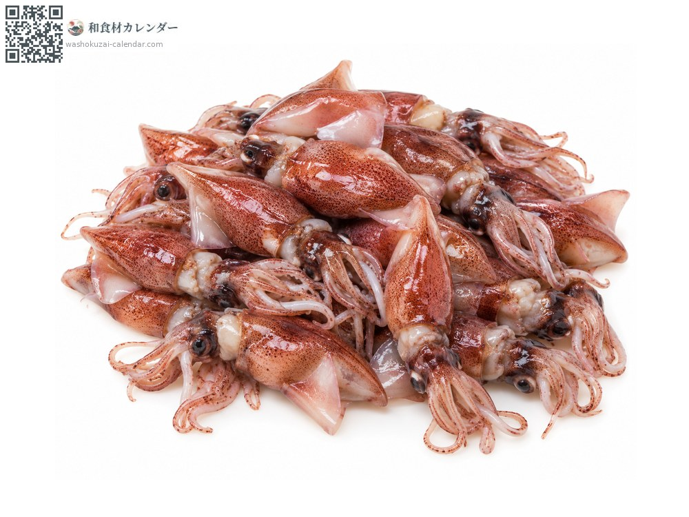
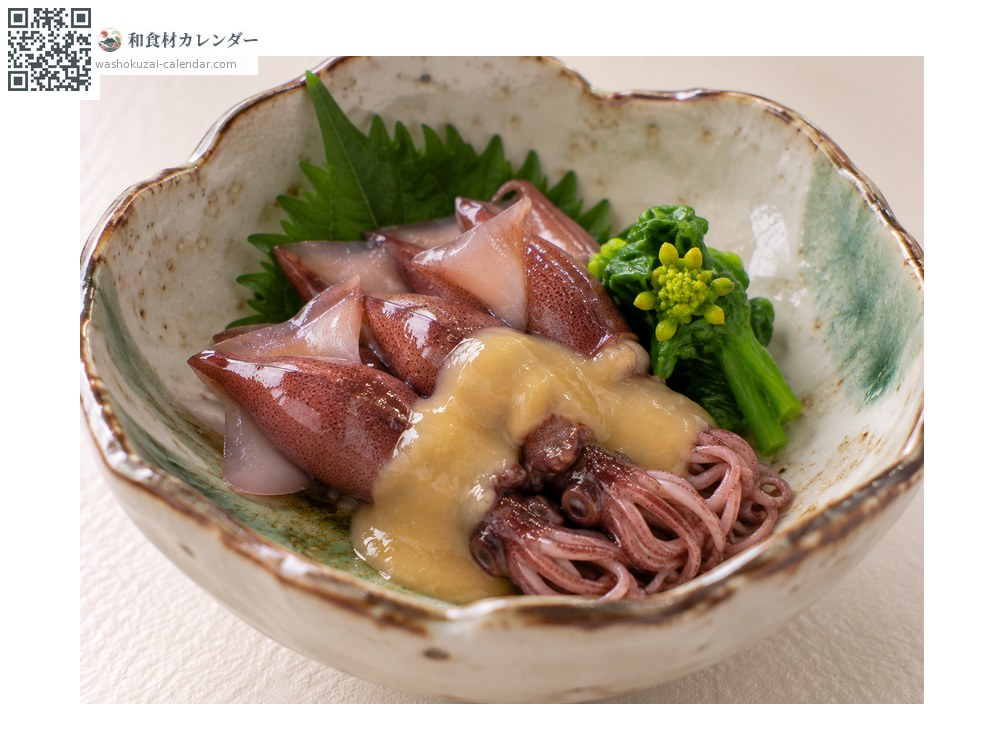
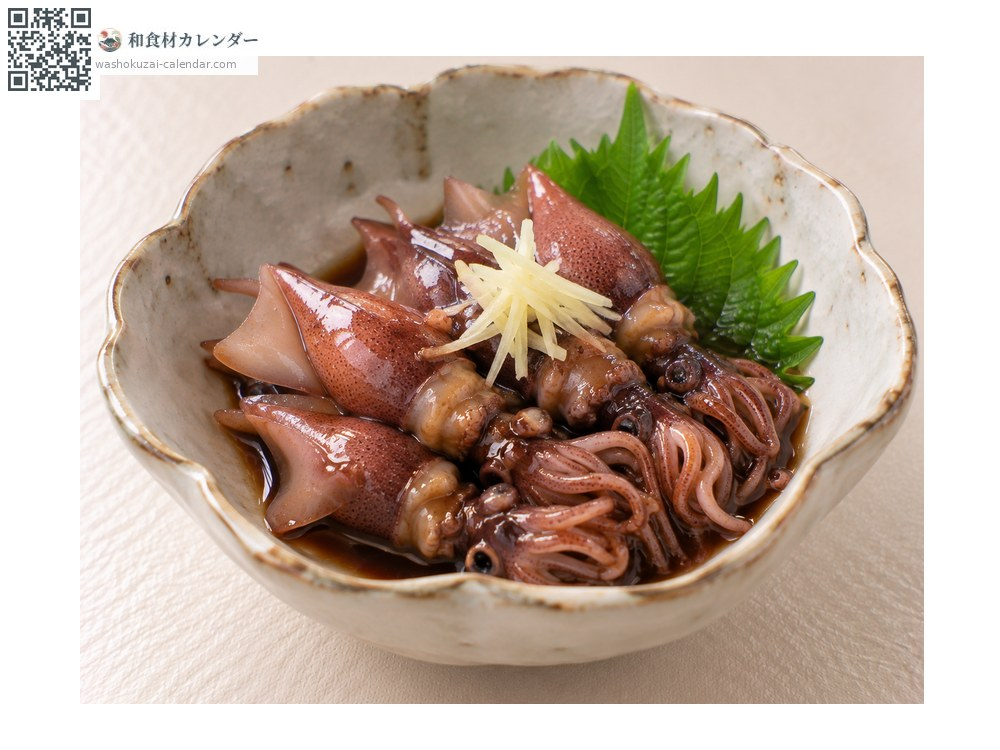
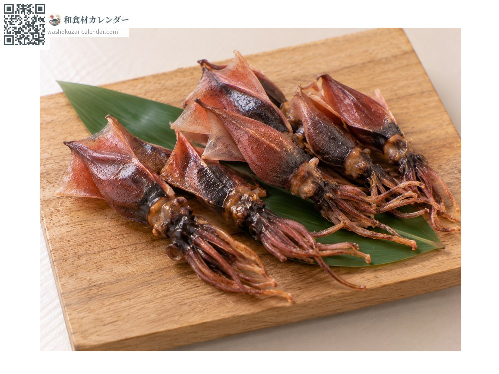
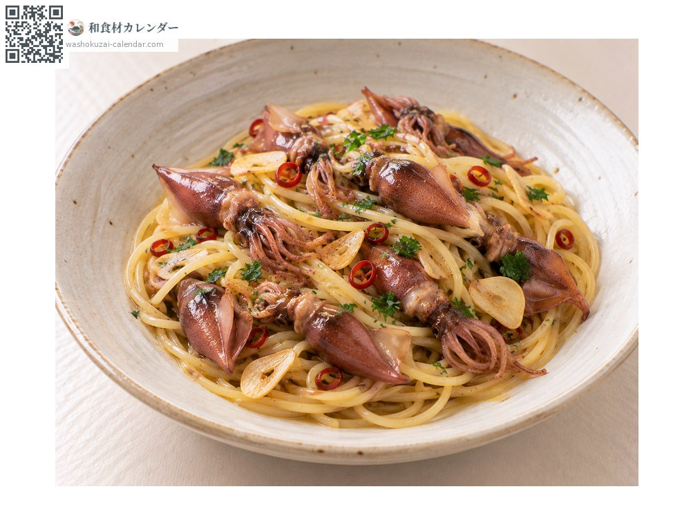

Firefly squid
ホタルイカ ほたるいか hotaruika
Also known ashotaruika
At its best in Apr, May, Jun

When it is at its best
In seasonAvailable
How to cook

Dressed with vinegared miso
Boiled and dressed with vinegared miso. The standard way to eat it.

Okizuke
Steeped in soy sauce. For raw preparations, frozen squid is used.

Dried
Dried and toasted, which concentrates the flavour. A drinker's dish.

Pasta
It works in Western cooking too, tossed with garlic.
How to choose
Clear eyes and a firm mantle, with the legs intact. Boiled squid should have vivid colour.
Storage
For raw eating it must be frozen first, against parasites. Boiled squid keeps two days refrigerated.
Main areas
Good to know
Named for the light organs along its body, which glow blue. In Toyama Bay it comes inshore to spawn, and the sea glowing blue is a sight of spring. Raw squid requires freezing, so even at the source it is only available raw for a limited season.